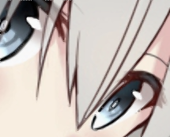

はじめに
インターフェース誌2015年6月号「超解像アルゴリズム」の記事を元に JavaScript で FCBI のデモを実装したので、今回はその使い方の解説です。(次回はアルゴリズム詳解の予定)
あと、エッジ判定型の超解像だと ICBI や iNEDI といったより良い手法もありますが、とりあえず今回は FCBI です。アルゴリズムが単純なのでソースコードを読むには良いと思います。
追記
続きを書きました。
- エッジ判定型超解像アルゴリズム FCBI (Fast curvature based interpolation) 後編:アルゴリズム詳解
デモ
- http://app.awm.jp/image.js/fcbi.html
- ソースコード: https://github.com/yoya/image.js/blob/master/fcbi.js
- (アルゴリズムに対応する function は drawFCBI_Phase[123] です)
- ソースコード: https://github.com/yoya/image.js/blob/master/fcbi.js
仕様: (w) x (h) サイズの画像を (2w-1) x (2h-1) にします。例えば100x100画像は 199x199に拡大します。
制限事項: 画像の一片は maxWidthHeight で指定できますが、 その最大値を 1000px 制限してます。そのうち上限を増やすかも。
使い方
(1) 画像をドロップして渡す
ブラウザに PNG, JPEG, GIF あたりの画像をドロップすると、とりあえず変換されます。
初期状態では画像の一片を320pxに制限しています。
(2) edge モードで TM 値を調整
輪郭が期待通りに出るよう TM 値を調整します。 イラストだと大抵は小さい値にすれば良いのですが、自然画だと丁度良い値を探すのが難しいです。
(3) maxWidthHeight を最大値にする
大きなサイズの画像は320以下に制限しているので、その制限値を引き上げます。 輪郭が期待と違っている場合は TM を再調整します。

(この例だと元々、小さい画像なので意味はないです)
(4) edge を外して完成
既存のリサイズ手法と比較
ドット絵とイラスト絵で実験しました。
ドット絵

% convert Opaopa.png -filter box -resize 400%x400% Opaopa-box.png # N-Neighbor
% convert Opaopa.png -filter triangle -resize 400%x400% Opaopa-triangle.png # Bi-Linear
% convert Opaopa.png -filter cubic -resize 400%x400% Opaopa-cubic.png
% convert Opaopa.png -filter lanczos -resize 400%x400% Opaopa-lanczos.png
% convert Opaopa.png -filter mitchell -resize 400%x400% Opaopa-mitchell.png
ちなみに ImageMagick の -resize 拡大のデフォルトは Mitchell フィルタです。
| Nearest-Neighbor | Bi-Linear | Bi-Cubic (B,C = 1,0) |
|---|---|---|
| Lanczoz (lobes:3) | Mitchell | FCBI (TM:4 で2回拡大) |
線がいい感じにつながってます。
イラスト絵
ドット絵だと極端なので、実際のイラスト絵でも比較してみます。
こちらから拝借して、目に注目して拡大。
% convert Kyo.png -filter box -resize 200%x200% Kyo-box.png # N-Neighbor
% convert Kyo.png -filter triangle -resize 200%x200% Kyo-triangle.png # Bi-Linear
% convert Kyo.png -filter cubic -resize 200%x200% Kyo-cubic.png
% convert Kyo.png -filter lanczos -resize 200%x200% Kyo-lanczos.png
% convert Kyo.png -filter mitchell -resize 200%x200% Kyo-mitchell.png
| Nearest-Neighbor | Bi-Liner | Bi-Cubic (B,C = 1,0) |
|---|---|---|
| Lanczoz (lobes:3) | Mitchell | FCBI (TM:20) |
|  |
FCBI の方がドット感が消えて線が自然に繋がっているように見えます。
最後に
レベル補正で正規化したピクセルを元にエッジ判定すれば、TM はもう少し適当で良いかもしれません。
Bi-Cubic や Lanczos はパラメータで色々特徴を変えられるので、そこまでしないと実はフェアじゃない。今回は ImageMagick のデフォルト値をそのままで手抜きしてます。
次回で、自分なりにアルゴリズムを解説し直す予定です。インターフェース誌の解説だと多分、慣れてる人じゃないと l (エル変数) って具体的に何？テンソル積記号出てきたけどどうすれば良いの？で止まるはずで。その辺りの補足説明を考えています。
続き
続きがあります。
- エッジ判定型超解像アルゴリズム FCBI (Fast curvature based interpolation) 後編:アルゴリズム詳解
参考
- Interface 2015年6月号 (CQ出版)
- Comparative Analysis of Edge Based Single Image Superresolution
- Parameter Optimization Of Fast Curvature Based Interpolation Using Genetic Algorithm – https://pdfs.semanticscholar.org/a61c/d74eefae6283f5d88ade1e241890f192d458.pdf